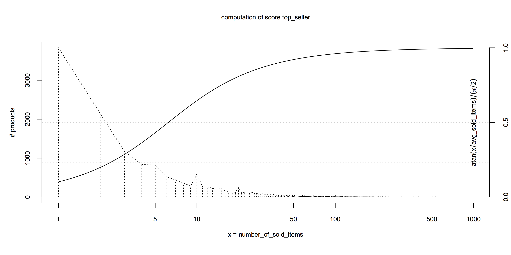
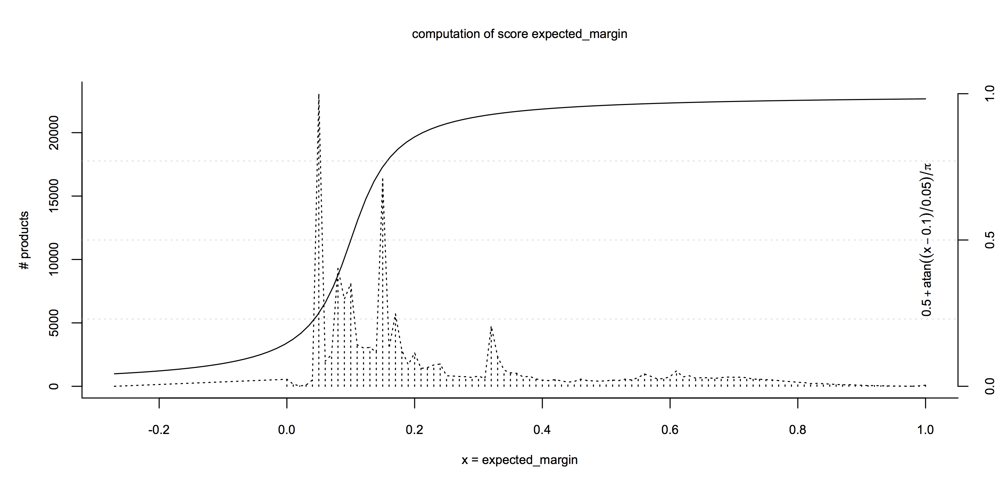
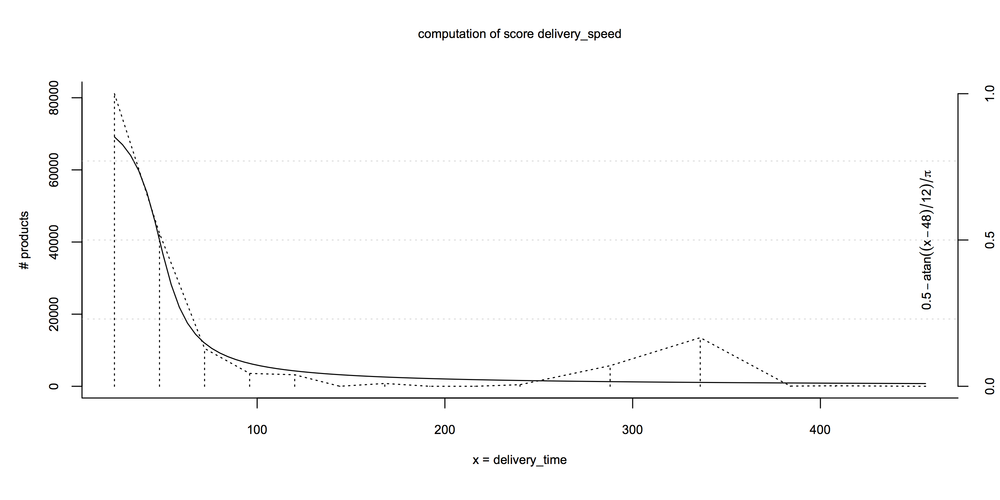

Data-Driven Ranking
When a query returns hundreds or thousands of results, it is absolutely crucial that the products at the top of the search result page are the ones that are most relevant to the user. Getting this right will lead to a higher conversion probability and increase customer happiness. Implementing proper data-driven ranking, however, is usually very tricky, because there might be large numbers of heuristics, which define what a good search result for a certain query is.
A common solution is to manually assign ranks to products (sometimes even within categories). However, this approach is not practical for large catalogs and might result in a bad search experience (for example, when products that are out of stock are listed at the top due to their manually assigned rank).
Sorting by Formulas Based on Scores
We recommend an approach where we pre-compute a list of normalized scores per product at import time and include them in the documents that are sent to Elasticsearch. These are the scores from our hammer example above (we left out the interesting scores due to the sensitivity of this information):
"scores": {
"top_seller": 0.91,
"pdp_impressions": 0.38,
"sale_impressions_rate": 0.8,
"data_quality": 0.87,
"delivery_speed": 0.85,
"random": 0.75,
"stock": 1
}
Each of these scores embodies a specific heuristic taken into account to define what a “good” product is; with higher values meaning “better”:
| Score | Basis for computation |
|---|---|
|
top_seller |
The number of products sold in the last three months |
|
pdp_impressions |
The number of product detail page impressions in the last three months |
|
sale_impressions_rate |
The conversion rate of the product in the last three months |
|
data_quality |
The quality of the product data (descriptions, images, etc.) |
|
delivery_speed |
How fast we expect the product to be delivered |
|
random |
A random number, included in rankings to avoid over-optimization |
|
stock |
1 if on stock, 0.001 if not, used to push out-of-stock products towards the end of the search results |
Many of these scores obviously only make sense for the business model of Contorion (and we left out the interesting ones). Finding meaningful scores is one of the bigger challenges with respect to good ranking.
In the mapping, scores are indexed as non-analyzed numbers with this dynamic template:
"dynamic_templates": [
{
"scores": {
"mapping": {
"index": "not_analyzed",
"type": "double"
},
"path_match": "scores.*"
}
}
]
In queries, search results are sorted using an algebraic expression that combines these scores (we replaced the actual weights by random values):
{
"query": {
"filtered": {
"query": {
"function_score": {
"score_mode": "first",
"boost_mode": "replace",
"query": {},
"functions": [
{
"script_score": {
"script": "
(1 + _score ** 0.5)
* doc['scores.stock'].value
* (0.1 * doc['scores.random'].value
+ 0.3 * doc['scores.top_seller'].value
+ 0.1 * doc['scores.pdp_impressions'].value
+ 0.2 * doc['scores.sale_impressions_rate'].value
+ 0.1 * doc['scores.data_quality'].value
+ 0.3 * doc['scores.delivery_speed'].value)
"
}
]
}
}
}
}
}
This formula:
- puts quite some emphasis on a high relevance (the _score term, a measure that Elasticsearch provides to determine how closely a document matches the query),
- requires the product to be in stock (by multiplying everything else with the scores.stock score),
- and finally computes a weighted sum of the rest of the scores.
Very different kinds of scoring functions are conceivable and the advantages of combining scores at query time are twofold: Our stake holders (category and product managers) can help us in finding good formulas by testing the effect of different expressions on the sorting of actual queries at run-time. Second, it is possible to use different ranking strategies on different parts of the website.
Computing Normalized Scores
To be able to combine scores in such expressions, we normalize them between 0 and 1 and try to make sure that they are more or less equally distributed across all documents. If, for example, the ranking formula is 0.3 * score_1 + 0.7 * score_2 and the scores are in the same range, then you could say that score_1 has a 30% influence on the outcome of the sorting and score_2 an influence of 70%. The equal distribution is important because if, for example, most documents have a very high score_2, then having a high score_2 becomes much more important for appearing at the top of the ranking than having a high score_1 (an effect which can be consciously used).
So for finding good normalization functions, it is important to look at the distribution of some measures across all products. This is the distribution of the number of sold items per product at Contorion (numbers are only up to the end of 2014 due to data sensitivity):

Out of the products sold at all, most were sold only once or twice, while only very few products were sold more than 10 times. For the top_seller score to be meaningful, it is less important whether the product sold 500 or 50 times but rather whether it sold 10 times or once. The atan(x - avg(X)) / (π / 2) score formula reflects this: it returns 0.5 for the average number of sold items across all products and has most of its dynamics around that average. A second example is the distribution of the expected margin across products (again with data up to the end of 2014):

For such “Gaussian-looking” distributions, we also use functions that put the average at 0.5 and that have most of their dynamics within the standard deviation of the distribution: 0.5 + atan((x - avg(X)) / stdev(X)) / π.
The last example is the expected delivery time in hours:

Here our stakeholders made a conscious decision to define 48 hours as the neutral case (a score of 0.5) and everything after 60 hours as “bad”: 0.5 - atan((x - 48) / 12) / π.
Finally, a word on data processing: We compute these scores as part of the ETL / data integration processes of the data warehouse. Given a table search_tmp.product_search_score_kpi which contains a list of performance measures per product, computing normalized scores can be as easy as this (most computations are left out due to their sensitive nature):
CREATE TABLE search_next.product_search_score AS
SELECT
merchant_product_id,
round((atan(number_of_sold_items
/ (SELECT avg(number_of_sold_items)
FROM search_tmp.product_search_score_kpi
WHERE number_of_sold_items > 0))
/ (0.5 * pi())) :: NUMERIC,
2) AS top_seller,
CASE WHEN number_of_impressions = 0 THEN 0
ELSE
round((atan(power((number_of_impressions :: NUMERIC + 20) / 2.5, 0.7)
/ (SELECT min(number_of_impressions)
FROM search_tmp.product_impression
WHERE pct_rank > 0.90))
/ (0.5 * pi())) :: NUMERIC,
2) END AS pdp_impressions,
round((0.5 - atan((delivery_time - 48.) / 12.)
/ pi()) :: NUMERIC,
2) AS delivery_speed,
round(random() :: NUMERIC, 2) AS random
FROM search_tmp.product_search_score_kpi;
But even without a data integration infrastructure in place, it should be quite easy to collect relevant metrics and translate them into scores. Since none of these numbers (except the random score) changes very quickly, it is sufficient if they are computed once a night.